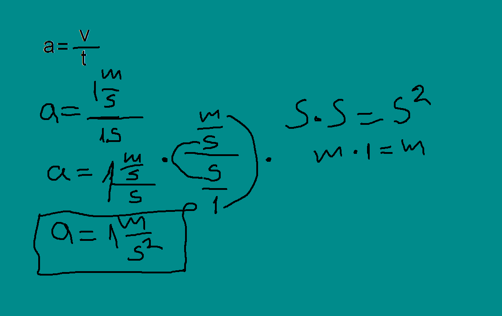

PROMJENA BRZINE ∆ v (delta v)
Posmatramo kretanje tijela u trenutku t1 i trenutku t2. U trenutku t1 tijelo je imalo brzinu v1, a u trenutku t2 imalo je brzinu v2.
Promjena brzine je veličina koja nam pokazuje za koliko se brzina promijenila ∆v=v2-v1– može biti pozitivna i negativna.v2 >v1 ∆v je pozitivno i tijelo ubrzava
v2 1 ∆v je negativno i tijelo usporavaFizička veličina koja predstavlja odnos promjene brzine kretanja ∆v i vremenskog intervala t je ubrzanje. Obilježava se sa (a) a jedinica je m/s2 (metar u sekundi na kvadrat).
Ubrzanje je vektorka veličina koja predstavlja odnos promene brzine i vremeskog intervala za koje se ta promena desila.
Ubrzanje može biti pozitivno i negativno. Pozitivno je kada telo ubrzava, povećava svoju brzinu, a negativno kada telo usporava.Još jedno objašnjenje: Pozitivno ubrzanje je kada je ∆v pozitivno i tad telo ubrzava, negativno je kada je ∆v negativno odnosno kada telo usporava. Pokušajmo da se setimo primera kada telo usoprava, a kada ubrzava?
Telo ubrzava: kada automobil kreće, kada avion treba da poleti, kada telo pada.Telo usporava: kada se voz zaustavlja na železničkoj stanici, kada kamen bacimo uvis, kada zaustavljamo vozilo.
